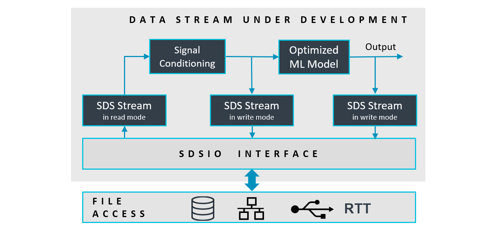
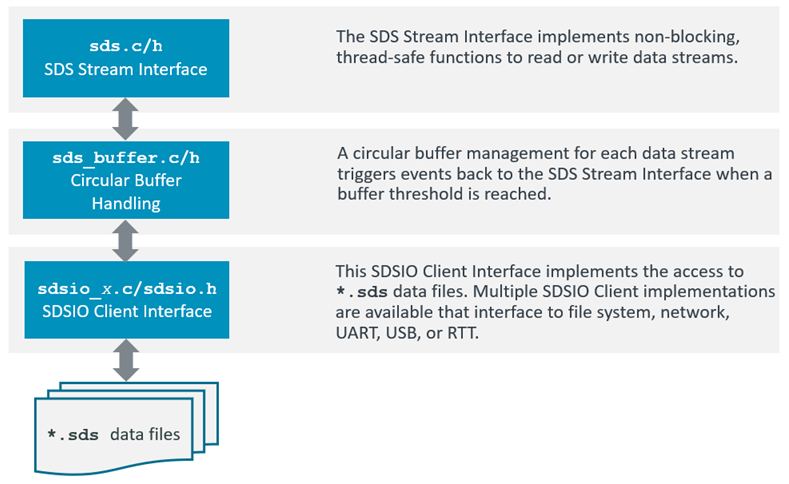
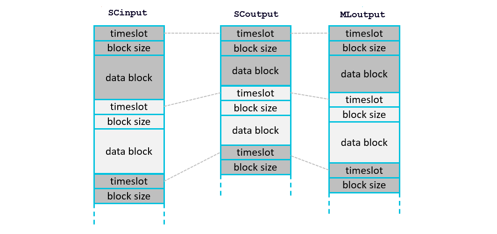
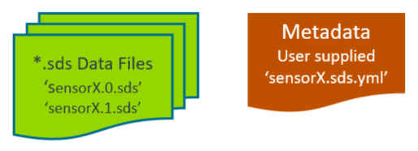
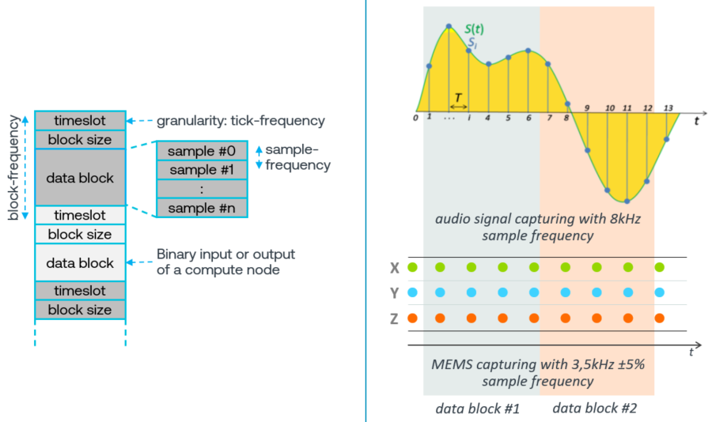
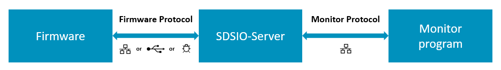

Theory of Operation
The SDS Framework enables recording and playback of one or more data streams for an application under development, as shown in the diagram below. With the SDSIO interface, the data streams are connected to SDS data files. The file storage can be either embedded within the system and accessed via a file system, or external (on a host computer) and accessed via a communication interface such as Ethernet or USB.
The DSP or ML algorithms under test operate on blocks and are executed periodically. This documentation uses the term Data Block to refer to a block of input or output data that is processed in one step by a DSP or ML compute node.

Using the SDS Stream Interface functions (sds.c/h), the data stream under development may read and write as shown above. The Stream Interface functions store data streams in a circular buffer (sds_buffer.c/h). This circular buffer is the I/O queue for the SDSIO-Client (sdsio_x.c/h).

Usage
The following diagram shows the usage of the SDS Stream Interface functions (executed in sdsThread). The sdsControlThread controls the overall execution. AlgorithmThread is the thread that executes Signal Conditioning (SC) and the ML Model.
When AlgorithmThread starts, it first calls the InitInputData function, which initializes the input interfaces
(camera, microphone or sensor interfaces). It then calls InitAlgorithm, which is responsible for initializing the ML algorithm.
After initialization, AlgorithmThread enters a loop in which it repeatedly calls GetInputData. This function provides a block of input data
used for a single inference. The inference itself is executed by the ExecuteAlgorithm function.
Two additional functions are also provided:
DiscardInputData: used during playback to discard incoming live input data, since the actual input is read from the SDS file.ResetAlgorithm: called before each playback run to reset internal states, memory buffers, and results from previous inferences, ensuring a clean start for the new playback session.
SDS Data Files
Each data stream is stored in a separate SDS data file. In the diagram below SCinput.0.sds is the input to Signal Conditioning, SCoutput.0.sds is the output of Signal Conditioning, and MLoutput.0.sds is the output of the ML Model. Each execution of the algorithm is represented by a data block with a timeslot. The timeslot allows correlating blocks from different streams.
All data blocks of one algorithm execution have the same timeslot value as shown below:

- Each call to the function
sdsWritewrites one complete data block. - Each call to the function
sdsReadreads one complete data block.
File Format
Each SDS file contains a sequence of variable-size data blocks. Every data block has the following information:
- timeslot: data block timeslot measured at the
tick-frequencyrate (32-bit unsigned integer, little endian). - block size: number of bytes in the following data block (32-bit unsigned integer, little endian).
- data block: SDS stream content (little endian, no padding) as described by the corresponding
*.sds.ymlmetadata file.
This structure supports recording and playback of multiple data streams that may have jitter. The timeslot information allows correlating data blocks from different data streams and enables sensor fusion applications where multiple data streams are combined as training input to one machine learning algorithm.
Filenames
SDS data streams are stored in *.sds files with the following naming convention:
<stream-name>.<label>[.p].sds
The .p is added when the SDS data stream is recorded during playback.
The sdsOpen function takes <stream-name> for the stream and the opening mode as input parameters.
Opening a stream in sdsModeRead mode is used for playback and opening a stream in sdsModeWrite is used for recording.
The SDSIO-Server adds .<label>[.p].sds to compose a filename as explained below:
Recording:
<label> is a sequential number starting at 0. The number is incremented until no file exists with the corresponding name, at which point a new file is created.
Each subsequent recording session uses the next <label> number in the sequence. If a file with the selected name already exists, it is preserved by renaming it with a .bak extension before a new file is created with the original name.
Playback:
When a *.sdsio.yml control file is used and contains a play: node, the <label> is specified in the corresponding step:.
When *.sdsio.yml control file is not used, the <label> is a sequential number starting at 0. If the corresponding file does not exist, the open operation fails.
Note
- Files recorded during playback include an additional
.pbefore the.sdsextension to distinguish them from originally recorded files (e.g.,ML_Out.0.p.sds). - If a recording filename already exists, any existing
.bakfile with the same name is deleted, the current file is renamed by appending.bak.
Timeslot
The timeslot is a 32-bit unsigned value and is used for:
- Alignment of different data streams that have the same timeslot value.
- Order of the SDS data files captured during execution.
- Combining multiple SDS file records with the same timeslot value.
The same timeslot connects different SDS file data blocks. It is useful to use the same timeslot for the recording of data blocks in different data streams for one iteration of a DSP or ML algorithm. In most cases the granularity of an RTOS tick (typically 1ms) is a good choice for a timeslot resolution.
SDS Metadata Format
The content of each data stream may be described in an SDS metadata file in YAML format that is created by the user. For example, a data stream named sensorX (stored in files sensorX.0.sds, sensorX.1.sds, ...) can be described with a corresponding metadata file sensorX.sds.yml as shown below.

The following section defines the YAML format of this metadata file. The file schema/sds.schema.json is a schema description of the SDS metadata format.
sds: |
Start of the SDS format description |
|---|---|
name: |
Name of the Synchronous Data Stream (required) |
description: |
Additional descriptive text (optional) |
block-frequency: |
Frequency in Hz (interval) of data blocks within a data stream (optional, see note) |
sample-frequency: |
Frequency in Hz (sample rate) of samples within a data block (optional, see note) |
tick-frequency: |
Tick frequency in Hz of the timeslot value (optional); default: 1000 Hz |
content: |
List of values captured (required, see below) |
Note
block-frequency:is optional as it can be derived from the timeslot value in combination withtick-frequency:.sample-frequency:is required when a data block contains multiple samples as shown in the picture below. Otherwise all samples are generated at the same time.- SDS v3.0 used
frequency:to indicate a sample rate. In SDS v3.1 this is renamed tosample-frequency:to clarify the information.
The picture below shows how sample-frequency: and block-frequency: are applied. When data streams from different sources are combined, data blocks may vary in size.

The content: list describes the binary layout of one data block. Depending on the stream type, it uses these nodes:
value:list entries to describe discrete values, such as sensor channels or algorithm outputs. A data block can contain multiple samples, so theblock sizeis a multiple of the sample size. Ablock sizeof 0 indicates that no sample is available in that timeslot.audio:entry to describe audio channel parameters.image:entry to describe a camera stream with frame layout parameters.
Value list data stream
Typically describes the sample layout of a sensor data stream or the output of ML algorithms. A data block may contain several samples as shown in the picture above. The sample-frequency: should be specified when the data stream uses a discrete sample rate.
With dim-x: and dim-y: arrays can be composed. The equivalent representation in C is "type name[dim-y][dim-x]".
content: |
Value list in the order stored in the data block |
|---|---|
- value: |
Name of the value (required) |
type: |
Data type of the value (required) |
dim-x: |
Array size x (optional); default: 1 |
dim-y: |
Array size y (optional); default: 1 |
offset: |
Offset of the value (optional); default: 0 |
scale: |
Scale factor of the value (optional); default: 1.0 |
unit: |
Physical unit of the value (optional) |
Examples:
The following sensorX.sds.yml provides the format description of the SDS sensorX binary data files and may be used by data conversion utilities and data viewers.
sds: # describes a synchronous data stream
name: sensorX # user defined name
description: Gyroscope stream with 1KHz sample rate, plus additional user data
sample-frequency: 1000
content:
- value: x # Value name is 'x'
type: uint16_t # stored using a 16-bit unsigned int
scale: 0.2 # value is scaled by 0.2
unit: dps # base unit of the value
- value: y
type: uint16_t
scale: 0.2
unit: dps
- value: z
type: uint16_t
unit: dps # scale 1.0 is default
- value: temp
type: float
unit: degree Celsius
- value: raw
type: uint16_t # raw data, no scale or unit given
- value: flag
type: uint32_t:1 # a single bit stored in a 32-bit int
The following ToF.sds.yml provides the format description of a Time-of-Flight sensor.
sds: # describes a synchronous data stream
name: ToF # user defined name
description: Time-of-Flight sensor with 8x8 matrix
content:
- value: distance # Value name is 'distance'
type: uint16_t # stored using a 16-bit unsigned int
dim-x: 8
dim-y: 8
Audio data stream
Describes audio data format, typically used for a microphone data stream.
content: |
Audio metadata for content: node |
|---|---|
- audio: |
Audio format specification |
sample-frequency: |
Audio sample rate in Hz (required) |
bit-depth: |
Bits per audio sample (required) |
channels: |
Number of interleaved audio channels (required) |
format: |
Audio format used (optional), currently only pcm is supported |
Example:
sds:
name: Mono
description: Mono 16-bit PCM microphone
content:
- audio:
sample-frequency: 16000
bit-depth: 16
channels: 1
format: pcm
Image data stream
Describes the image data format, typically used for a camera data stream.
content: |
Image metadata for content: node |
|---|---|
- image: |
Image (camera data) format specification |
pixel_format: |
Pixel format identifier (required) |
width: |
Number of pixels per row (required, integer >= 1) |
height: |
Number of rows (required, integer >= 1) |
stride_bytes: |
Bytes per row for single-plane formats (optional, see note) |
planes: |
Per-plane stride for multi-plane formats (optional, 2..3 entries, see note) |
planes: |
Per-plane metadata entry |
|---|---|
- stride_bytes: |
Bytes per row for this plane (required, integer >= 1) |
Note
- For
image:, exactly one ofstride_bytes:orplanes:must be provided.
Template files for various image data formats are located in schema/image_format.
These templates are listed below and use Linux V4L2 references.
pixel_format: |
Template file | V4L2 reference page |
|---|---|---|
RAW8 |
RAW8.sds.yml |
Luma-Only formats (GREY family) |
RAW10 |
RAW10.sds.yml |
10-bit Bayer (expanded to 16-bit) |
RGB565 |
RGB565.sds.yml |
RGB formats |
RGB888 |
RGB888.sds.yml |
RGB formats (RGB24) |
NV12 |
NV12.sds.yml |
Planar YUV formats |
NV21 |
NV21.sds.yml |
Planar YUV formats |
I420 |
I420.sds.yml |
Planar YUV formats (YUV420 / YU12 family) |
NV16 |
NV16.sds.yml |
Planar YUV formats |
NV61 |
NV61.sds.yml |
Planar YUV formats |
YUYV |
YUYV.sds.yml |
Packed YUV formats |
UYVY |
UYVY.sds.yml |
Packed YUV formats |
YUV422P |
YUV422P.sds.yml |
Planar YUV formats |
YUV444 |
YUV444.sds.yml |
Packed YUV formats (packed 4:4:4) |
YUV444P |
YUV444P.sds.yml |
Planar YUV formats (YUV444M family) |
Note
- When RAW10 is packed (4 pixels in 5 bytes), use 10-bit packed Bayer formats.
Example:
sds:
name: Video Stream - RGB888
description: RGB888 video frames from camera
content:
- image:
pixel_format: RGB888
width: 1280
height: 720
stride_bytes: 3840 # 3 bytes per pixel
Code Example
The following code snippets show how to use SDS for recording sensor data. In this case an accelerometer data stream is recorded.
#include "sds.h"
// variable definitions
struct { // sensor data stream format
uint16_t x;
uint16_t y;
uint16_t z;
} accelerometer [30]; // number of samples in one data stream record
sdsId_t *accel_id; // data stream id
uint8_t accel_buf[(sizeof(accelerometer)*2)+2048]; // data stream buffer for circular buffer handling
uint32_t timeslot;
int32_t n; // number of bytes written to data stream
:
// *** function calls ***
sdsInit(NULL); // init SDS
:
// open data stream for writing (recording)
accel_id = sdsOpen("Accel", sdsModeWrite, accel_buf, sizeof(accel_buf));
:
// write data in accelerometer buffer with a timeslot from the RTOS kernel.
timeslot = osKernelGetTickCount();
n = sdsWrite(accel_id, timeslot, accelerometer, sizeof(accelerometer));
if (n != sizeof(accelerometer)) {
... // unexpected size returned, error handling
}
:
sdsClose(accel_id); // close data stream
Buffer Size
The size of the data stream buffer depends on several factors such as:
- the communication interface technology that may impose specific buffer size requirements to maximize data transfer rates.
- the frequency of the algorithm execution. Fast execution speeds may require a larger buffer.
As a guideline, the buffer size should be at least (2 × block size) + 2 KB.
The minimum recommended buffer size is 4 KB.
SDSIO-Server Protocols
The SDSIO-Server communicates with the firmware using the SDSIO-Server Firmware Protocol over supported physical interfaces, including Ethernet, Wi-Fi, USB, debugger, and serial (USART) connections. It communicates with the monitor program through the Monitor Interface over a network connection, typically via the loopback (localhost) interface.

SDSIO-Server Firmware Protocol
The SDSIO-Server uses a simple protocol for data exchange between a host computer and the embedded target that integrates an SDSIO Interface. The protocol assumes that communication to the SDSIO-Server is ensured by the underlying transport technology (TCP/IP or USB); therefore, no additional checks are implemented.
The following conventions describe the command semantics used in the following documentation:
| Symbol | Description |
|---|---|
| > | Prefix indicating the direction: Command from target firmware to SDSIO-Server on the host computer. |
| < | Prefix indicating the direction: Response from SDSIO-Server to target firmware. |
| WORD | 32-bit value (low byte first). |
| **** | The field above has exactly one occurrence. |
| ++++ | The field above has a variable length. |
Commands:
Commands are sent from the embedded target to the host computer running the SDSIO-Server.
| ID | Name | Description |
|---|---|---|
| 1 | SDSIO_CMD_OPEN | Open an SDS data file |
| 2 | SDSIO_CMD_CLOSE | Close an SDS data file |
| 3 | SDSIO_CMD_WRITE | Write to an SDS data file |
| 4 | SDSIO_CMD_READ | Read from an SDS data file |
| 5 | SDSIO_CMD_PING | Ping SDSIO-Server |
| 6 | SDSIO_CMD_FLAGS | SDS control flags update request from host |
| 7 | SDSIO_CMD_INFO | Send control information to host |
Each Command starts with a Header (4 Words = 16 bytes) followed by optional data of variable length. Depending on the Command, the SDSIO-Server replies with a Response that includes a Header with the same ID as the Command and may contain additional data.
Note
- The SDSIO_CMD_FLAGS Response is not a reply to the SDSIO_CMD_FLAGS Command; rather, it is an asynchronous Response sent by the host.
SDSIO_CMD_OPEN
The Command with ID = 1 (SDSIO_CMD_OPEN) opens an SDS data file on the host computer.
Mode defines read (value = 0) or write (value = 1) operation. Len of Stream Name is the size of the string in bytes.
SDS data filenames use the following file format: <name>.<label>.sds, where <name> is the stream name used as the base filename
of the SDS data file and <label> is a user label or index depending on usage (for details see section Filenames).
| WORD | WORD | WORD | WORD **************|+++++++++++++|
> 1 | 0 | Mode | Len of Stream Name | Stream Name |
|******|********|******|********************|+++++++++++++|
The Response with ID = 1 (SDSIO_CMD_OPEN) provides a Handle that is used to identify the file in subsequent Commands.
| WORD | WORD | WORD | WORD *******|
< 1 | Handle | Mode | 0 |
|******|********|******|*************|
SDSIO_CMD_CLOSE
The Command with ID = 2 (SDSIO_CMD_CLOSE) closes an SDS data file on the host computer.
The Handle is the identifier obtained with SDSIO_CMD_OPEN.
There is no Response from the SDSIO-Server to this Command.
| WORD | WORD | WORD | WORD |
> 2 | Handle | 0 | 0 |
|******|********|******|******|
SDSIO_CMD_WRITE
The Command with ID = 3 (SDSIO_CMD_WRITE) writes data to an SDS data file on the host computer.
The Handle is the identifier obtained with SDSIO_CMD_OPEN.
Size specifies the size of Data in bytes.
There is no Response from the SDSIO-Server to this Command.
| WORD | WORD | WORD | WORD |++++++|
> 3 | Handle | 0 | Size | Data |
|******|********|******|******|++++++|
SDSIO_CMD_READ
The Command with ID = 4 (SDSIO_CMD_READ) reads data from an SDS data file on the host computer.
The Handle is the identifier obtained with SDSIO_CMD_OPEN.
Size specifies the number of bytes to read.
| WORD | WORD | WORD | WORD |
> 4 | Handle | Size | 0 |
|******|********|******|******|
The Response with ID = 4 (SDSIO_CMD_READ) provides the data read from an SDS data file on the host computer.
Size specifies the size of Data in bytes that was read and Status with nonzero = end of stream, else 0.
| WORD | WORD | WORD | WORD |++++++|
< 4 | Handle | Status | Size | Data |
|******|********|********|******|++++++|
SDSIO_CMD_PING
The Command with ID = 5 (SDSIO_CMD_PING) verifies if the SDSIO-Server is active and reachable on the host.
| WORD | WORD | WORD | WORD |
> 5 | 0 | 0 | 0 |
|******|******|******|******|
The Response with ID = 5 (SDSIO_CMD_PING) returns the Status with nonzero = server active, else 0.
| WORD | WORD | WORD | WORD |
< 5 | 0 | Status | 0 |
|******|******|********|******|
SDSIO_CMD_FLAGS
The asynchronous Response with ID = 6 (SDSIO_CMD_FLAGS) contains the SDS control flags update information from the host.
This Response can arrive at any time when the host wants to update the SDS control flags.
It can also precede a Response to any other command (e.g., SDSIO_CMD_OPEN or SDSIO_CMD_READ), but it cannot be sent by the host
while a Response to another Command is in progress.
The Set Mask specifies the bits to set in the sdsFlags and the Clear Mask specifies the bits to clear in the sdsFlags.
| WORD | WORD | WORD | WORD |
< 6 | Set Mask | Clear Mask | 0 |
|******|**********|************|******|
SDSIO_CMD_INFO
The Command with ID = 7 (SDSIO_CMD_INFO) sends control information (sdsFlags, sdsIdleRate and error information) to the host. There is no Response from the SDSIO-Server to this Command.
sdsFlagsis the current value of that global variable.sdsIdleRateis the current value of that global variable, value 0xFFFFFFFF indicates that idle rate information is not valid.Error Lenspecifies the size of theError Data, value 0 indicates that no error occurred.
| WORD | WORD | WORD | WORD |++++++++++++|
> 7 | sdsFlags | sdsIdleRate | Error Len | Error Data |
|******|**********|*************|***********|++++++++++++|
Error Data contains the information from sdsError global structure and has the following format.
| WORD | WORD |+++++++++++++++++++|
| Status | Line | Filename (string) |
|********|******|+++++++++++++++++++|
SDSIO-Server Monitor Interface
The SDSIO-Server provides an additional TCP socket that may be used by a monitor program to observe
SDS file activity and control sdsFlags in the firmware.
The monitor interface is enabled with command line option --mon-port <port>.
The following conventions describe the command and message semantics used in the following documentation:
| Symbol | Description |
|---|---|
| > | Prefix indicating the direction: Command sent from the Monitor program to the SDSIO-Server. |
| < | Prefix indicating the direction: Response or asynchronous message sent from the SDSIO-Server to the Monitor program. |
| WORD | 32-bit value (low byte first). |
| **** | The field above has exactly one occurrence. |
| ++++ | The field above has a variable length. |
Commands and Messages:
Commands are sent to the SDSIO-Server which replies with a response (depending on command). SDSIO-Server can also send asynchronous messages at any time when not processing a command.
| ID | Name | Description |
|---|---|---|
| 1 | SDSIO_MON_OPEN | Information about the SDS file open operation (message) |
| 2 | SDSIO_MON_CLOSE | Information about the SDS file close operation (message) |
| 6 | SDSIO_MON_FLAGS | Monitor program request to the SDSIO-Server to update SDS control flags in the firmware |
| 7 | SDSIO_MON_INFO | Information update received from the firmware and forwarded to the Monitor program (message) |
| 8 | SDSIO_MON_SHUTDOWN | Monitor program request to the SDSIO-Server to complete current tasks and shut down gracefully |
Each Command or Message starts with a Header (4 Words = 16 bytes) followed by optional data of variable length. Depending on the Command, the SDSIO-Server replies with a Response that includes a Header with the same ID as the Command and may contain additional data.
SDSIO_MON_OPEN
The Message with ID = 1 (SDSIO_MON_OPEN) is sent whenever an SDS data file is opened by the SDSIO-Server.
Mode defines read (value = 0) or write (value = 1) operation. Filename Len is the size of the string in bytes and Filename is the name of the file (including path).
| WORD | WORD | WORD | WORD | WORD ********|++++++++++|
< 1 | 0 | Mode | 0 | Filename Len | Filename |
|******|******|******|******|**************|++++++++++|
SDSIO_MON_CLOSE
The Message with ID = 2 (SDSIO_MON_CLOSE) is sent whenever an SDS data file is closed by the SDSIO-Server.
Filename Len is the size of the string in bytes and Filename is the name of the file (including path).
| WORD | WORD | WORD | WORD | WORD ********|++++++++++|
< 2 | 0 | 0 | 0 | Filename Len | Filename |
|******|******|******|******|**************|++++++++++|
SDSIO_MON_FLAGS
The Command with ID = 6 (SDSIO_MON_FLAGS) is used by the Monitor program to request an update of the SDS control flags in the firmware.
The Set Mask specifies the bits to set in the sdsFlags and the Clear Mask specifies the bits to clear in the sdsFlags.
This command does not generate a response from the SDSIO-Server.
| WORD | WORD | WORD | WORD |
> 6 | Set Mask | Clear Mask | 0 |
|******|**********|************|******|
SDSIO_MON_INFO
The Message with ID = 7 (SDSIO_MON_INFO) contains status information received by the SDSIO-Server from the firmware, including sdsFlags, sdsIdleRate, and error information. The message is sent to the Monitor program whenever the SDSIO-Server receives updated information from the firmware, as well as upon the initial connection to the Monitor program.
sdsFlagsis the current value of that global variable in the firmware.sdsIdleRateis the current value of that global variable in the firmware, value 0xFFFFFFFF indicates that idle rate information is not valid.Error Lenspecifies the size of theError Data, value 0 indicates that no error occurred in the firmware.
| WORD | WORD | WORD | WORD |++++++++++++|
< 7 | sdsFlags | sdsIdleRate | Error Len | Error Data |
|******|**********|*************|***********|++++++++++++|
Error Data contains the information from sdsError global structure and has the following format.
| WORD | WORD |+++++++++++++++++++|
| Status | Line | Filename (string) |
|********|******|+++++++++++++++++++|
SDSIO_MON_SHUTDOWN
The Command with ID = 8 (SDSIO_MON_SHUTDOWN) is used by the Monitor program to request the SDSIO-Server to complete any ongoing operations, signal to the firmware that it will stop operating, and shut down gracefully.
| WORD | WORD | WORD | WORD |
> 8 | 0 | 0 | 0 |
|******|******|******|******|
Note
When shutdown is initiated, all data streams will be closed by the SDSIO-Server. Ideally it should be initiated when the user application has completed playback or recording and closed all data streams.
SDSIO Message Sequence
This section describes the states and the message sequence of the SDS framework when using the SDSIO-Server. It contains the following threads that execute on the target.
- sdsControlThread: Control thread that organizes the overall execution.
- AlgorithmThread: Executes the algorithm under test.
- sdsThread: SDS worker thread.
- SDSIO-Server: SDSIO-Server running on the host computer.
Note
- The command
SDSIO_CMD_FLAGSis sent asynchronously by the SDSIO-Server.
The sdsControlThread handles a state machine with the following states:
| States | Description |
|---|---|
| SDS_STATE_INACTIVE | Streaming is not active; waiting for flag info from SDSIO-Server |
| SDS_STATE_CONNECTED | Device (client) is connected to SDSIO-Server (host), but streaming is not active |
| SDS_STATE_START | Request to start streaming, open streams and get ready for read/write operations |
| SDS_STATE_ACTIVE | Streaming is active |
| SDS_STATE_STOP_REQ | Request to stop streaming and close open streams |
| SDS_STATE_STOP_DONE | Streaming has stopped |
| SDS_STATE_END | Request to end streaming (e.g., no more playback data is available) |
| SDS_STATE_RESET | Request to reset the device |
The following flowcharts show the state transition in context with the messages that are exchanged with the SDSIO-Server.
Connect flowchart
Note
- When the command
SDSIO_CMD_FLAGSsets SDS_FLAG_ALIVE, thesdsControlThreadtransitions to SDS_STATE_CONNECTED. - When
SDSIO_CMD_INFOis sent more than 10 times without aSDSIO_CMD_FLAGSresponse, thesdsControlThreadtransitions into the SDS_STATE_INACTIVE.
Recording start flowchart
Recording stop flowchart
Playback flowchart